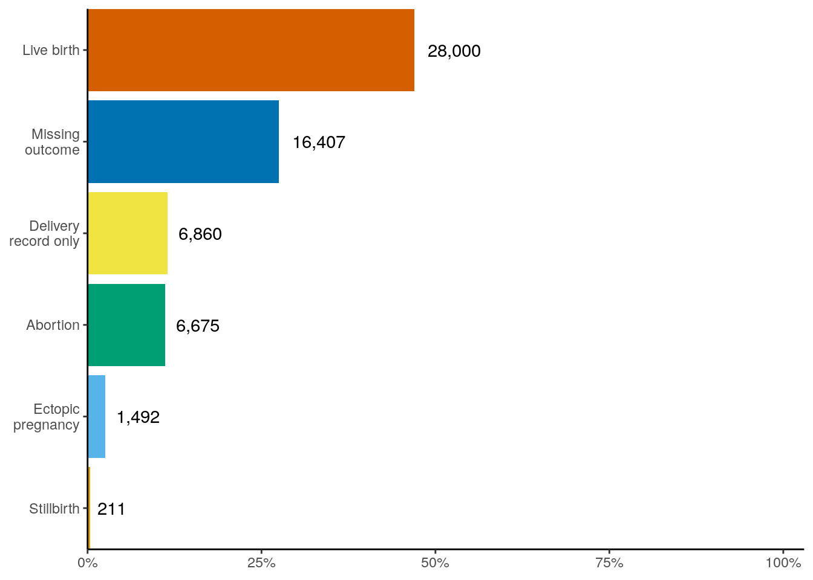

library(allofus)
library(tidyverse)
library(dbplyr)
library(ggokabeito)
library(gtsummary)
theme_set(theme_classic())Look at results of HIPPS algorithm
con <- aou_connect()hipps <- read_rds(here::here("workbench/merged_episodes_with_metadata_df.rds"))hipps_persons <- tbl(con, "cb_search_person") %>%
filter(person_id %in% !!unique(hipps$person_id)) %>%
filter(sex_at_birth != "Male") %>%
inner_join(distinct(tbl(con, "ds_survey"), person_id), by = "person_id") %>%
select(person_id, dob, state_of_residence, starts_with("has"))survey_data <- aou_survey(hipps_persons,
questions = c(
1586140, 1585899, 1585845, 1585375,
1585838, 1585892, 1585940, 1585811
),
question_output = c(
"race_eth", "sexual_orientation", "sex_at_birth", "income",
"gender", "marital_status", "education", "pregnancy"
),
collect = TRUE
) %>%
mutate(across(where(is.character), ~ if_else(.x %in% c("PreferNotToAnswer", "DontKnow"), "Skip", .x))) %>%
rowwise(person_id) %>%
mutate(min_svy_date = min(c_across(ends_with("_date")), na.rm = TRUE)) %>%
ungroup()hipps_w_demo <- hipps %>%
inner_join(survey_data, by = "person_id") %>%
mutate(
outcome_category = fct_collapse(final_outcome_category, "AB" = c("AB", "SA")),
outcome_category = fct_infreq(outcome_category),
outcome_category = fct_recode(outcome_category,
"Live birth" = "LB",
"Missing outcome" = "PREG",
"Delivery record only" = "DELIV",
"Abortion" = "AB",
"Stillbirth" = "SB",
"Ectopic pregnancy" = "ECT"
),
preg_svy_after_basics_days = as.numeric(pregnancy_date - min_svy_date),
time_from_end = as.numeric(min_svy_date - inferred_episode_end),
time_to_start = as.numeric(inferred_episode_start - min_svy_date),
min_time = pmin(abs(time_from_end), abs(time_to_start), na.rm = TRUE)
) %>%
group_by(person_id) %>%
mutate(
closest_pregnancy = case_when(
between(min_svy_date, inferred_episode_start, inferred_episode_end) ~ 1,
min_time == min(min_time) ~ 1,
TRUE ~ 0
),
closest_pregnancy = case_when(
closest_pregnancy == 1 & !between(min_svy_date, inferred_episode_start, inferred_episode_end) &
any(between(min_svy_date, inferred_episode_start, inferred_episode_end)) ~ 0,
TRUE ~ closest_pregnancy
),
length_closest = ifelse(closest_pregnancy == 1, gestational_age_days_calculated, 10000000),
# arbitrary due to durrent overlaps
closest_pregnancy = ifelse(sum(closest_pregnancy) > 1 & closest_pregnancy == 1 &
length_closest != max(length_closest),
0, closest_pregnancy
),
closest_pregnancy = ifelse(sum(closest_pregnancy) > 1 & closest_pregnancy == 1 &
length_closest == length_closest[closest_pregnancy == 1][1], 0, closest_pregnancy),
closest_pregnancy = ifelse(sum(closest_pregnancy) == 0 & min_time == min(min_time), 1, closest_pregnancy)
) %>%
ungroup() %>%
mutate(
took_the_survey = case_when(
inferred_episode_end - days(30) < pregnancy_date & (pregnancy %in% c("No", "Skip") | is.na(pregnancy)) ~ "After",
inferred_episode_start > pregnancy_date & (pregnancy %in% c("No", "Skip") | is.na(pregnancy)) ~ "Before",
pregnancy == "Yes" & between(min_svy_date, inferred_episode_start, inferred_episode_end) ~ "During",
pregnancy == "Yes" & closest_pregnancy == 1 ~ "During",
pregnancy %in% c("No", "Skip") & between(min_svy_date, inferred_episode_start, inferred_episode_start + days(7 * 12)) ~ "During",
between(min_svy_date, inferred_episode_start, inferred_episode_end) & (is.na(pregnancy) | pregnancy == "Skip") ~ "During",
inferred_episode_end < min_svy_date ~ "After",
inferred_episode_start > min_svy_date ~ "Before",
TRUE ~ "Unclear"
)
)nrow(hipps_w_demo)[1] 59645length(unique(hipps_w_demo$person_id))[1] 31726hipps_w_demo %>%
janitor::tabyl(outcome_category)| outcome_category | n | percent |
|---|---|---|
| Live birth | 28000 | 0.4694442 |
| Missing outcome | 16407 | 0.2750775 |
| Delivery record only | 6860 | 0.1150138 |
| Abortion | 6675 | 0.1119121 |
| Ectopic pregnancy | 1492 | 0.0250147 |
| Stillbirth | 211 | 0.0035376 |
hipps_w_demo %>%
janitor::tabyl(outcome_category) %>%
mutate(outcome_category = fct_rev(outcome_category)) %>%
ggplot(aes(outcome_category, percent)) +
geom_col(aes(fill = outcome_category)) +
geom_text(aes(label = scales::number(n, big.mark = ",")),
hjust = -.25
) +
scale_fill_okabe_ito() +
scale_y_continuous(labels = scales::percent) +
scale_x_discrete(labels = ~ str_wrap(.x, 13)) +
coord_flip(expand = FALSE, ylim = c(0, 1.03)) +
theme(
legend.position = "none",
axis.title = element_blank()
)
hipps_w_demo %>%
mutate(outcome_concordance_score = fct_rev(factor(outcome_concordance_score))) %>%
janitor::tabyl(outcome_category, outcome_concordance_score) %>%
mutate(across(where(is.numeric), ~ ifelse(.x < 20 & .x > 0, "<20", as.character(.x))))| outcome_category | 2 | 1 | 0 |
|---|---|---|---|
| Live birth | 12078 | 3535 | 12387 |
| Missing outcome | 4750 | 1098 | 10559 |
| Delivery record only | 518 | 51 | 6291 |
| Abortion | 814 | 190 | 5671 |
| Ectopic pregnancy | 110 | 27 | 1355 |
| Stillbirth | 67 | 24 | 120 |
janitor::tabyl(hipps_w_demo, outcome_concordance_score)| outcome_concordance_score | n | percent |
|---|---|---|
| 0 | 36383 | 0.6099925 |
| 1 | 4925 | 0.0825719 |
| 2 | 18337 | 0.3074357 |
hipps_w_demo %>%
mutate(outcome_category = fct_rev(outcome_category)) %>%
ggplot() +
geom_bar(aes(outcome_category,
fill = outcome_category,
alpha = factor(outcome_concordance_score)
), position = "fill") +
scale_alpha_manual(values = c(.25, .5, 1)) +
scale_fill_okabe_ito() +
scale_y_continuous(labels = scales::percent) +
scale_x_discrete(labels = ~ str_wrap(.x, 13)) +
coord_flip(expand = FALSE) +
theme(
legend.position = "none",
axis.title = element_blank()
)hipps_w_demo %>%
janitor::tabyl(precision_category)| precision_category | n | percent |
|---|---|---|
| month | 602 | 0.0100931 |
| non-specific | 25801 | 0.4325761 |
| three-month | 7225 | 0.1211334 |
| three-week | 1191 | 0.0199681 |
| two-month | 3643 | 0.0610780 |
| two-week | 3601 | 0.0603739 |
| week | 12683 | 0.2126415 |
| week_poor-support | 4899 | 0.0821360 |
hipps_w_demo %>%
mutate(
resolution = case_when(
precision_category %in% c("week", "two-week", "three-week") ~ "Week-level",
precision_category %in% c("month", "two-month", "three-month") ~ "Month-level",
precision_category %in% c("week_poor-support") ~ "Week-level (1 concept)", precision_category %in% c("non-specific") ~ "Non-specific"
),
resolution = fct_relevel(resolution, "Week-level", "Week-level (1 concept)", "Month-level", "Non-specific")
) %>%
count(resolution) %>%
mutate(prop = n / sum(n))| resolution | n | prop |
|---|---|---|
| Week-level | 17475 | 0.2929835 |
| Week-level (1 concept) | 4899 | 0.0821360 |
| Month-level | 11470 | 0.1923045 |
| Non-specific | 25801 | 0.4325761 |
hipps_w_demo %>%
group_by(outcome_category) %>%
summarise(
mean = mean(gestational_age_days_calculated, na.rm = TRUE),
median = median(gestational_age_days_calculated, na.rm = TRUE),
min = min(gestational_age_days_calculated, na.rm = TRUE),
max = max(gestational_age_days_calculated, na.rm = TRUE),
q5 = quantile(gestational_age_days_calculated, .05, na.rm = TRUE),
q95 = quantile(gestational_age_days_calculated, .95, na.rm = TRUE)
) %>%
mutate(across(where(is.numeric), ~ . / 7))| outcome_category | mean | median | min | max | q5 | q95 |
|---|---|---|---|---|---|---|
| Live birth | 39.97957 | 39.85714 | 8.714286 | 92.28571 | 34.428571 | 44.00000 |
| Missing outcome | 20.64839 | 19.00000 | 0.000000 | 71.14286 | 8.000000 | 40.00000 |
| Delivery record only | 41.89417 | 43.00000 | 9.000000 | 88.28571 | 35.285714 | 45.28571 |
| Abortion | 18.14082 | 19.85714 | -11.428571 | 75.00000 | 8.857143 | 24.00000 |
| Ectopic pregnancy | 12.40406 | 12.00000 | -9.000000 | 52.71429 | 8.000000 | 14.20714 |
| Stillbirth | 33.96412 | 35.28571 | 10.000000 | 72.42857 | 21.000000 | 43.00000 |
theme_set(theme_classic())hipps_w_demo %>%
filter(
inferred_episode_start < inferred_episode_end,
HIP_flag == 1 & PPS_flag == 1,
inferred_episode_start > as.Date("2016-01-01")
) %>%
mutate(conc = "Data-rich episodes") %>%
bind_rows(hipps_w_demo %>% mutate(conc = "All")) %>%
mutate(
resolution = case_when(
precision_category %in% c("week", "two-week", "three-week") ~ "Week-level",
precision_category %in% c("month", "two-month", "three-month") ~ "Month-level",
precision_category %in% c("non-specific") ~ "Non-specific",
precision_category %in% c("week_poor-support") ~ "Week (poor support)"
),
resolution = fct_relevel(resolution, "Week-level", "Week (poor support)", "Month-level", "Non-specific"),
outcome_concordance_score = ifelse(outcome_concordance_score %in% c(0, 1), 1, outcome_concordance_score),
outcome_category = fct_rev(outcome_category)
) %>%
ggplot(aes(outcome_category, fill = outcome_category)) +
# geom_bar() +
geom_bar(aes(
# outcome_category,
# fill = outcome_category,
alpha = factor(outcome_concordance_score)
), position = "stack") +
scale_alpha_manual(values = c(.4, 1)) +
coord_flip(expand = FALSE) +
scale_y_continuous(
limits = c(0, 14000),
breaks = seq(0, 12000, 3000)
) +
facet_grid(
rows = vars(resolution),
cols = vars(conc),
labeller = label_wrap_gen(15)
) +
scale_fill_okabe_ito() +
theme(legend.position = "none") +
labs(y = NULL, x = NULL)states <- hipps_persons %>%
collect() %>%
select(person_id, state_of_residence, dob)
hipps_cleaned <- hipps_w_demo %>%
left_join(states, by = "person_id") %>%
mutate(
race_eth_cat = case_when(
str_detect(race_eth, "Hispanic") ~ "Hispanic",
str_detect(race_eth, ",") ~ "Mixed",
race_eth == "RaceEthnicityNoneOfThese" ~ "Other",
TRUE ~ race_eth
),
gender_cat = case_when(
gender %in% c(
"NonBinary", "Transgender",
"AdditionalOptions"
) ~ "Other/multiple",
str_detect(gender, ",") ~ "Other/multiple",
gender == "Skip" ~ "No answer",
TRUE ~ gender
),
gender_cat = fct_relevel(gender_cat, "Woman", "Man", "Other/multiple", "No answer"),
orientation_cat = case_when(
sexual_orientation %in% c("Gay", "Lesbian") ~ "Gay/lesbian",
str_detect(sexual_orientation, "Bisexual") ~ "Bisexual",
str_detect(sexual_orientation, "Gay") ~ "Gay/lesbian",
str_detect(sexual_orientation, "Lesbian") ~ "Gay/lesbian",
sexual_orientation == "Skip" ~ "No answer",
.default = sexual_orientation
),
across(
where(is.character),
~ fct_collapse(.x,
"No answer" = c(
"I prefer not to answer", "None Indicated", "Prefer Not to Answer",
"Prefer Not To Answer", "PreferNotToAnswer", "Skip", "DontKnow",
"PMI: Skip", "PMI: Prefer Not To Answer", "PMI: Dont Know", "Race Ethnicity None Of These"
),
NULL = "No matching concept"
)
),
race_eth_cat = fct_recode(
race_eth_cat,
"Black or African-American" = "Black",
"Hispanic or Latino" = "Hispanic",
"More than one race" = "Mixed",
"Native Hawaiian or Other Pacific Islander" = "NHPI",
"Middle Eastern or North African" = "MENA"
),
income_cat = fct_collapse(income,
"< 10k" = "less10k",
"10-25k" = c("10k25k"),
"25-50k" = c("25k35k", "35k50k"),
"50-100k" = c("50k75k", "75k100k"),
"> 100k" = c(
"100k150k",
"150k200k", "more200k"
)
),
income_cat = fct_relevel(income_cat, "< 10k", "10-25k", "25-50k", "50-100k", "> 100k"),
edu_cat = fct_collapse(education,
"Less than high school" = c(
"FiveThroughEight", "NeverAttended",
"NineThroughEleven", "OneThroughFour"
),
"High school graduate" = c("TwelveOrGED"),
"Some college" = c("CollegeOnetoThree"),
"College graduate" = "CollegeGraduate",
"Advanced degree" = "AdvancedDegree"
),
edu_cat = fct_relevel(
edu_cat,
"Less than high school", "High school graduate", "Some college", "College graduate", "Advanced degree"
),
marital_status_cat = fct_collapse(marital_status,
"Married/partnered" = c("Married", "LivingWithPartner"),
"Divorced/separated/widowed" = c("Divorced", "Separated", "Widowed"),
"Never married" = "NeverMarried"
),
across(
c(gender_cat, orientation_cat, race_eth_cat, edu_cat, income_cat, marital_status_cat),
~ fct_drop(na_if(.x, "No answer"))
)
) %>%
left_join(tibble(
state_of_residence = c(state.abb, "DC", "PR", "AS", "MP", "MH", "PW", "FM"),
state_cat = c(state.name, "District of Columbia", "Puerto Rico", "American Samoa", "Northern Mariana Islands", "Marshall Islands", "Palau", "Federated States of Micronesia")
)) %>%
mutate(
year_start = year(inferred_episode_start),
year_end = year(inferred_episode_end),
gestational_age_weeks = gestational_age_days_calculated / 7,
mom_age = as.numeric(difftime(inferred_episode_end, dob, units = "days")) / 365.25,
mom_age_cat = cut(mom_age, c(0, seq(15, 55, 5)), right = FALSE, include.lowest = TRUE)
) %>%
separate(mom_age_cat, into = c("start", "stop"), sep = ",") %>%
mutate(across(c(start, stop), parse_number),
stop = stop - 1
) %>%
unite(mom_age_cat, c(start, stop), sep = "-") %>%
mutate(
mom_age_cat = paste(mom_age_cat, "years"),
mom_age_cat = ifelse(mom_age_cat == "50-54 years", "50 years and over", mom_age_cat),
mom_age_cat = ifelse(is.na(mom_age), NA, mom_age_cat),
year_start_cat = cut(year_start,
breaks = c(-Inf, 2015:2022),
labels = c("2015 and earlier", as.character(2016:2022))
),
year_end_cat = cut(year_end,
breaks = c(-Inf, 2015:2022),
labels = c("2015 and earlier", as.character(2016:2022))
),
mom_age_cat_table = fct_collapse(mom_age_cat, "45 years and over" = c("45-49 years", "50 years and over")),
mom_age_cat_table = fct_drop(mom_age_cat_table),
across(where(is.factor), ~ fct_lump_min(.x, min = 20)),
across(c(state_cat, gender_cat, orientation_cat, race_eth_cat, marital_status_cat), fct_infreq),
state_cat = fct_lump_min(state_cat, min = 20)
)write_rds(hipps_cleaned, here::here("workbench/hipps_cleaned.rds"))
aou_workspace_to_bucket(here::here("workbench/hipps_cleaned.rds"))hipps_cleaned %>%
mutate(
Concordance = case_when(
is.na(algo1_id) | is.na(algo2_id) ~ "Single algorithm",
.default = fct_recode(as.character(outcome_concordance_score),
"Not concordant" = "0",
"Somewhat concordant" = "1",
"Fully concordant" = "2"
)
),
Concordance = factor(Concordance, levels = c("Single algorithm", "Not concordant", "Somewhat concordant", "Fully concordant"))
) %>%
ggplot(aes(year_start, fill = Concordance)) +
geom_histogram(bins = length(1979:2022)) +
geom_vline(xintercept = 2015.5, linetype = "dashed", color = "darkgrey") +
coord_cartesian(expand = FALSE) +
labs(x = "Year of pregnancy start", y = "Number of pregancies") +
scale_fill_okabe_ito()Demographics table
demo_table <- hipps_cleaned %>%
distinct(person_id, gender_cat, orientation_cat, race_eth_cat, income_cat, edu_cat, marital_status_cat, state_cat) %>%
tbl_summary(
include = c(gender_cat, orientation_cat, race_eth_cat, income_cat, edu_cat, state_cat),
label = list(
gender_cat ~ "Gender identity",
orientation_cat ~ "Sexual orientation",
race_eth_cat ~ "Race/ethnicity",
income_cat ~ "Family income",
edu_cat ~ "Education",
state_cat ~ "State of residence"
)
) %>%
bold_labels()
demo_table| Characteristic | N = 31,7261 |
|---|---|
| Gender identity | |
| Woman | 31,077 (99%) |
| Other/multiple | 137 (0.4%) |
| Man | 93 (0.3%) |
| Unknown | 419 |
| Sexual orientation | |
| Straight | 28,288 (92%) |
| Bisexual | 1,642 (5.3%) |
| None | 521 (1.7%) |
| Gay/lesbian | 367 (1.2%) |
| Unknown | 908 |
| Race/ethnicity | |
| White | 13,017 (42%) |
| Hispanic or Latino | 10,859 (35%) |
| Black or African-American | 5,205 (17%) |
| Asian | 878 (2.8%) |
| More than one race | 604 (1.9%) |
| Other | 285 (0.9%) |
| Middle Eastern or North African | 171 (0.6%) |
| Native Hawaiian or Other Pacific Islander | 42 (0.1%) |
| Unknown | 665 |
| Family income | |
| < 10k | 4,678 (19%) |
| 10-25k | 3,484 (15%) |
| 25-50k | 4,751 (20%) |
| 50-100k | 4,871 (20%) |
| > 100k | 6,237 (26%) |
| Unknown | 7,705 |
| Education | |
| Less than high school | 3,377 (11%) |
| High school graduate | 7,259 (23%) |
| Some college | 8,509 (27%) |
| College graduate | 6,427 (21%) |
| Advanced degree | 5,381 (17%) |
| Unknown | 773 |
| State of residence | |
| Arizona | 6,741 (21%) |
| New York | 5,470 (17%) |
| Massachusetts | 4,306 (14%) |
| Wisconsin | 2,946 (9.3%) |
| Pennsylvania | 2,763 (8.7%) |
| California | 2,624 (8.3%) |
| Illinois | 1,747 (5.5%) |
| Michigan | 1,604 (5.1%) |
| Alabama | 1,274 (4.0%) |
| Florida | 531 (1.7%) |
| Texas | 292 (0.9%) |
| South Carolina | 238 (0.8%) |
| Georgia | 247 (0.8%) |
| New Jersey | 159 (0.5%) |
| Colorado | 151 (0.5%) |
| Minnesota | 143 (0.5%) |
| Connecticut | 129 (0.4%) |
| Mississippi | 84 (0.3%) |
| New Hampshire | 39 (0.1%) |
| Tennessee | 43 (0.1%) |
| Louisiana | 30 (<0.1%) |
| Rhode Island | 21 (<0.1%) |
| Indiana | 23 (<0.1%) |
| Wyoming | 10 (<0.1%) |
| Other | 111 (0.3%) |
| 1 n (%) | |
Live births
preg_table <- hipps_cleaned %>%
filter(outcome_category == "Live birth") %>%
tbl_summary(
include = c(
mom_age_cat_table, year_end_cat, took_the_survey, gestational_age_weeks,
preterm_status_from_calculation
),
label = list(
mom_age_cat_table ~ "Maternal age",
year_end_cat ~ "Year of delivery",
took_the_survey ~ "All of Us participation relative to pregnancy",
gestational_age_weeks ~ "Gestational age at delivery (weeks)",
preterm_status_from_calculation ~ "Preterm (< 37 weeks)"
),
digits = list(gestational_age_weeks ~ c(1))
) %>%
bold_labels()
preg_table| Characteristic | N = 28,0001 |
|---|---|
| Maternal age | |
| 0-14 years | 6 (<0.1%) |
| 15-19 years | 1,558 (5.6%) |
| 20-24 years | 5,765 (21%) |
| 25-29 years | 7,730 (28%) |
| 30-34 years | 7,496 (27%) |
| 35-39 years | 4,275 (15%) |
| 40-44 years | 1,075 (3.8%) |
| 45 years and over | 95 (0.3%) |
| NA-NA years | 0 (0%) |
| Year of delivery | |
| 2015 and earlier | 11,099 (40%) |
| 2016 | 1,694 (6.0%) |
| 2017 | 1,825 (6.5%) |
| 2018 | 2,515 (9.0%) |
| 2019 | 3,787 (14%) |
| 2020 | 2,582 (9.2%) |
| 2021 | 2,806 (10%) |
| 2022 | 1,692 (6.0%) |
| All of Us participation relative to pregnancy | |
| After | 21,508 (77%) |
| Before | 2,886 (10%) |
| During | 3,552 (13%) |
| Unclear | 54 (0.2%) |
| Gestational age at delivery (weeks) | 39.9 (38.1, 43.0) |
| Preterm (< 37 weeks) | 3,510 (13%) |
| 1 n (%); Median (IQR) | |